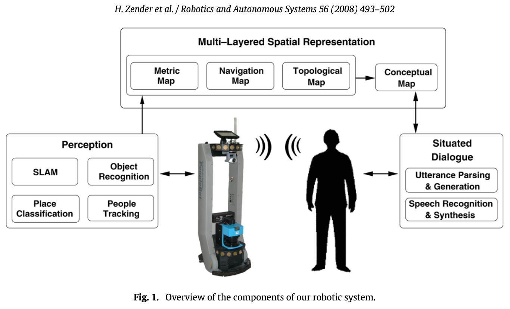
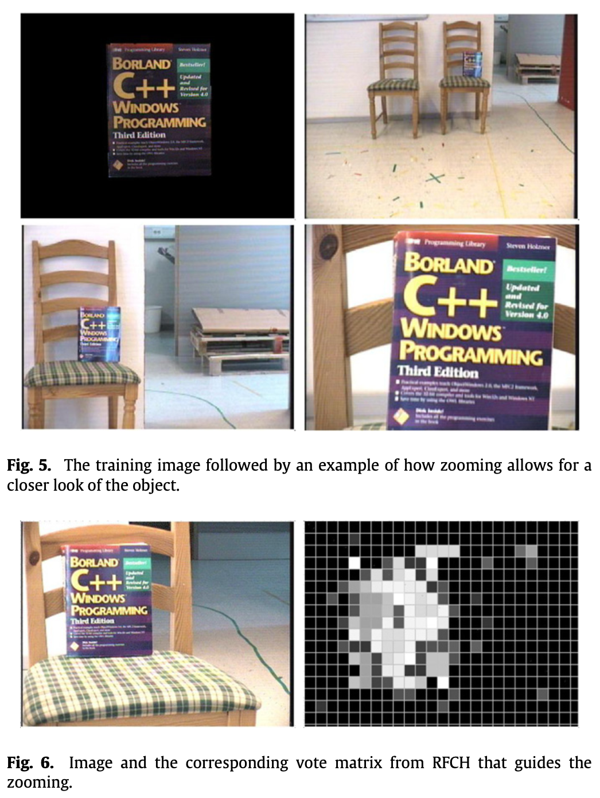
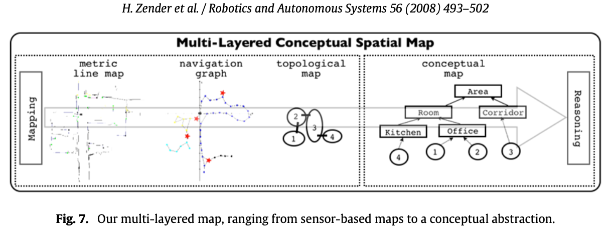
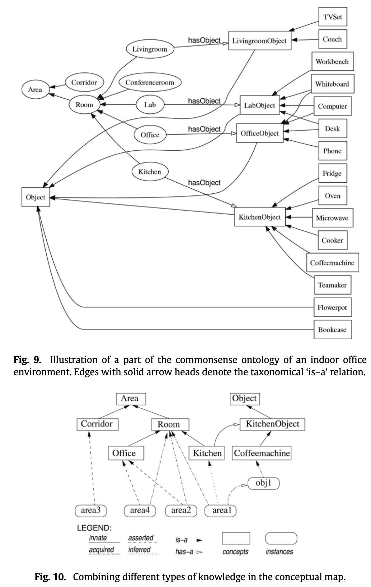
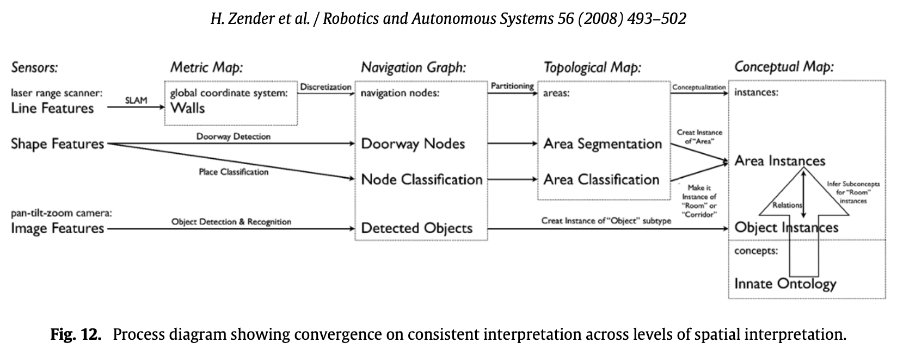

- Zender, H., Mozos, O. M., Jensfelt, P., Kruijff, G. J., Burgard, W. (2008). Conceptual spatial representations for indoor mobile robots. Robotics and Autonomous Systems, 56(6), 493-502.
The specific problem we focus on in this article is how, given innate (possibly human-like) concepts a robot may have of spatial organization, the robot can autonomously build an internal representation of the environment by combining these concepts with different low-level sensory systems. This is done by creating a conceptual representation of the environment, in which the concepts represent spatial and functional properties of typical human-made indoor environments.
There are different cognitively inspired approaches to robot navigation. These approaches need not necessarily rely on an exact global self-localization, but rather require the execution of a sequence of strictly local, well-defined behaviors in order to iteratively reach a target position.
Their proposed solution

- the perception subsystem for evaluation of sensory input
- the communication subsystem for situated spoken dialogue
- the subsystem for multi-layered conceptual spatial mapping that bridges the gap between sensor-based maps and a human-like spatial representation
In their approach, a laser scan can has 3 possible semantic classes:
- Doorways
- Corridors
- Rooms
Object Recognition
First method
To extract features, they extract them from SIFT and put them in one common KD-tree. Each SIFT feature is given a label that refers back to from what object it comes. Each feature is matched to all training images at once using the KD-tree to perform fast matching.
Each match with a feature in the KD-tree represents one vote for a certain object, namely the one contributing the corresponding SIFT feature. The output of this initial matching step is the list of objects that accumulated the most votes.
Second method
Object recognition, when performed on a mobile platform, actually should be thought of as two separate processes: object detection and object recognition (… no shit).
To guide the search, they employ an attention mechanism based on receptive field cooccurrence histograms (RFCH) which provides us with a vote matrix for each object we search for. This vote matrix tells us where in the image the corresponding object is likely to be found, if at all.
With this method we could detect even quite small objects at a relatively long distance. The time to search a scene scales roughly linearly with the number of objects in the database and therefore it is rather slow in its current form.

One improvement to this would be to use top–down information to cut the number of objects to search for. For example, if we know that we are in a living room we do not have to search for a coffee machine.
Multi-layered spatial representation
In order for a robot to meaningfully act in, and talk about, an environment, it must be able to assign human categories to spatial entities. Many types of rooms are designed in a way that their structure and spatial layout afford specific actions, such as corridors, or staircases. Other types of rooms afford more complex actions.
For instance, the concept living room applies to rooms that are suited for resting. Having rest, in turn, can be afforded by certain objects, such as couches or TV sets. We thus conclude that besides basic geometric properties, such as shape and layout, the objects that are located in a room are a reliable basis for appropriately categorizing it.

- The navigation graph establishes a model of free space and its connectivity. the robot’s spatial representation is augmented with semantic environment information. This is encoded by assigning navigation nodes one of three classes which can be considered to be present in every indoor environment. Objects detected by the computer vision component are also stored on this level of the map. They are associated with the navigation node that is closest to their estimated metric position.
- The topological map divides the set of nodes in the navigation graph into areas. They are separated by a node classified as doorway. This layer of abstraction corresponds to a human-like qualitative segmentation of an indoor space into distinct regions.In order to determine the category of an area, we take a majority vote approach of the classification results of all nodes in the given area.
- The conceptual map is two-folded and at the highest level of abstraction. For one, it contains an innate conceptual ontology that defines abstract categories for rooms and objects and how they are related. Second, the information extracted from sensor data and given through situated dialogue about the actual environment is represented as tokens that instantiate abstract concepts.
Asserted knowledge: During a guided tour with the robot, the user typically names areas and certain objects that he or she believes to be relevant for the robot. Typical assertions in a guided tour include “You are in the corridor,” or “This is the charging station.” Any such assertion is stored in the conceptual map.
Innate conceptual knowledge: They have handcrafted an ontology (Fig. 9) that models conceptual commonsense knowledge about an indoor office environment. On the top level of the conceptual taxonomy, there are the two general concepts area and object
Inferred knowledge: For example, combining the acquired information that a given topological area is classified as room and contains a couch, with the innate conceptual knowledge given in their commonsense ontology, it can be inferred that this area can be categorized as being an instance of living room. So basically, draw new conclusions from what you have.

System Integration
To achieve robust place classifications, even while interacting with a user, they try not to classify every possible geometric coordinate inside an area, but instead to classify only the nodes in the navigation graph (every X[m] distance).
For object recognition, they tried two methods:
- The first one uses unsegmented images and allows the system to expand its database of objects in a much easier way. It is a matter of making sure that the object is in the field of view of the camera and acquiring an image.
- The second one uses segmented images and makes the acquisition of knowledge about new objects more complicated.
Conceptualizing Areas
Observed linear structures are interpreted as walls, delineating an area. This yields a purely geometrical interpretation of the notion of area, based on its perceivable physical boundaries. Doorways are regarded as transitions between distinct topological areas.
Another observation from human spatial cognition is that humans tend to categorize space not only geometrically, but also functionally. This functionality is often a result of the different objects inside an area, like home appliances or furniture, that afford these functions. In order to achieve a functional-geometric interpretation, a robot thus has to integrate its knowledge about distinct topological areas with its knowledge about the presence of certain objects.
Recognizing transitions between areas
The door detector used in this work finds doors by looking for narrow openings in the laser data. They tested this approach and it produced some false positives, as there are many gaps in the environment with similar width as doorways. To counteract this, the robot would only accept openings that the robot itself passes through. While it significantly reduced the number of false positives, the disadvantage with this door detection scheme is that the robot is unable to detect doors where it has not traveled so far.
